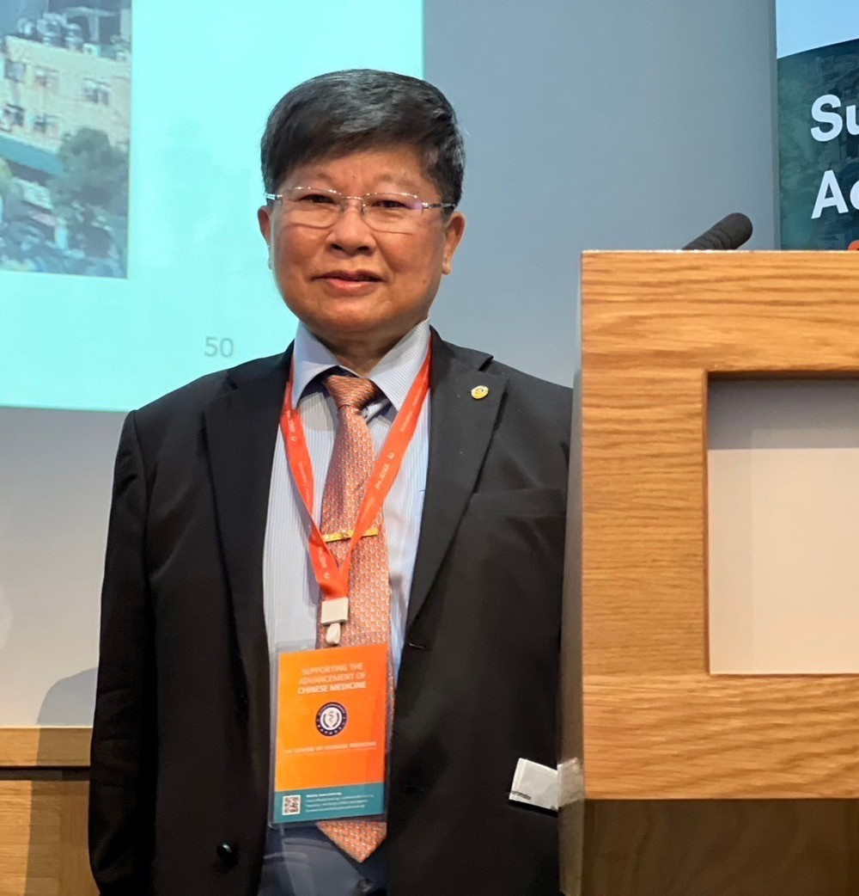

🧪
農殘檢驗合格
產品經農殘檢驗合格，並投保產品責任險（投保金額不等同理賠金額）。
每日營養補給 · 升級版
植物配方濃縮萃取營養補給，全素可食。醫學大學研發技轉，成分與用法清楚標示。

科學證據與權威推薦
中西醫結合專業研發
植物配方 · 全素
醫學大學研發技轉
濃縮萃取、植物配方、標示清楚，適合長期日常補給。
🧪
產品經農殘檢驗合格，並投保產品責任險（投保金額不等同理賠金額）。
📏
每包 10 公克，每日 1 包；泡 60cc 溫水即可，營養標示與成分完整公開。
🎓
由中央研究院院士、中國醫藥大學王陸海副校長團隊相關研究與技轉脈絡支持。

「全素 Vegan，植物配方可長期使用。」
「醫學大學研發技轉產品，農殘檢驗合格。」
「每包 10g，泡 60cc 溫水，食用方式簡單。」
訂購、成分、經銷合作都歡迎來信，仕康企業將盡快回覆。
與我們聯絡